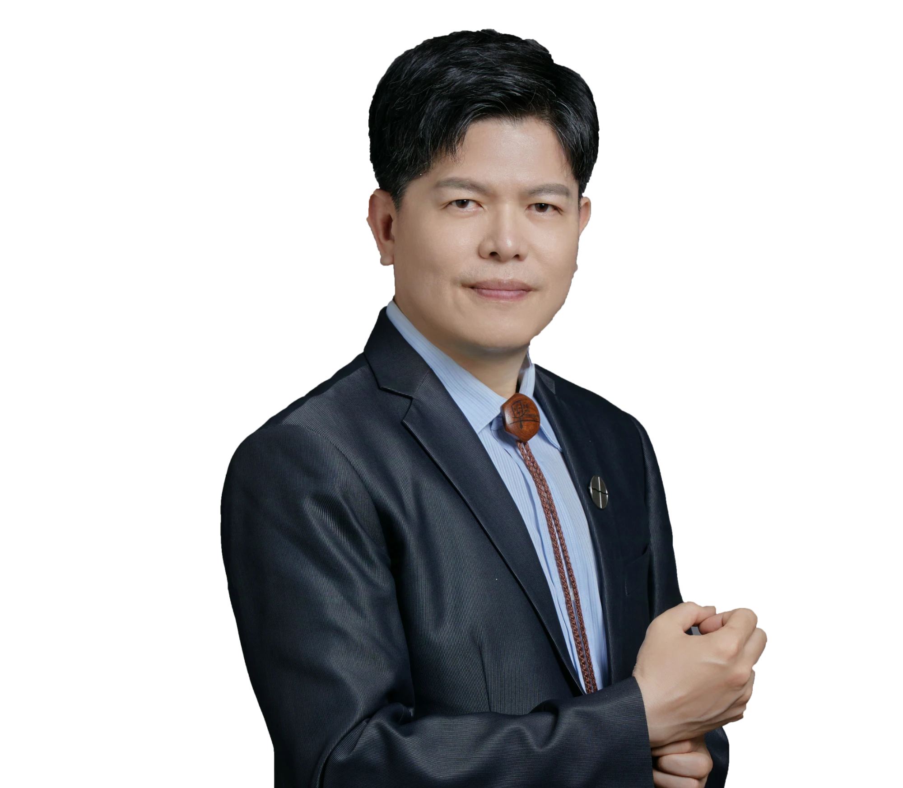

邱志榮CHIU CHIH-JUNG
宇沐新創有限公司 總經理General Manager, YUMU Sustainability
英國 AA1000 ACSAP 副查證師 · ISO 14064-1 / ISO 14067 查證員 · 2026 TCSA 台灣企業永續獎評審AccountAbility AA1000 ACSAP · ISO 14064-1 / ISO 14067 Verifier · 2026 TCSA Award Judge
曾任台達電子總經理特助、中強光電蘇州廠產品處代理處長，近 30 年橫跨金融、產業研究、電子製造與兩岸創業輔導。現專注 ESG 報告書查證、溫室氣體盤查與產品碳足跡，協助企業把永續承諾轉化為可被驗證的資訊。 Former special assistant to the president at Delta Electronics and acting division head at Coretronic (Suzhou). Nearly 30 years across banking, industry research, electronics manufacturing and cross-strait startup mentoring. Today I verify ESG reports, greenhouse-gas inventories and product carbon footprints, helping companies turn sustainability commitments into information that can be verified.

國際查證資格Assurance qualifications
以下資格皆可在發證機構查詢；點選「看證書」可檢視原件影像。Each qualification can be checked with the issuing body. Select “View” to open the original certificate.
| 標準Standard | 資格 / 發證機構Qualification / Issuer | 證書編號Cert. No. | 日期Date | |
|---|---|---|---|---|
| AA1000AS v3 | ACSAP 可持續性鑑證副查證師Associate Certified Sustainability Assurance PractitionerAccountAbility（英國UK） | A19082407 | 2024-08-19 首次核發 年度續證辦理中First issued 2024-08-19 Annual renewal in progress |
|
| AA1000 · GRI · SDG · GHG | 主導查證師（第一、二方）Lead Verifier (First & Second Party)Best PCB · 美國 IAS 認證人員驗證機構 PCB-144IAS-accredited personnel certification body PCB-144 | AA24105037 | 有效至 2027-06-02Valid to 2027-06-02 | |
| AA1000 · GRI · SDG · GHG | 查證師（Verifier）VerifierBest PCB · 美國 IAS 認證人員驗證機構 PCB-144IAS-accredited personnel certification body PCB-144 | AA24208054 | 有效至 2027-08-22Valid to 2027-08-22 | |
| ISO 14064-1:2018 | 溫室氣體組織主導查證員（第一、二方）GHG Organization Lead Verifier (First & Second Party)Best PCB · NABC | GHGC241111007 | 有效至 2027-11-18Valid to 2027-11-18 | |
| ISO 14067:2018 | 產品碳足跡查證員（第一、二方）Carbon Footprint of Products Verifier (First & Second Party)Best PCB · NABC | CN02-CFP25101006 | 有效至 2028-01-11Valid to 2028-01-11 | |
| TCSA 2026 | 台灣企業永續獎 見習評審Taiwan Corporate Sustainability Awards, Judge台灣永續能源研究基金會（TAISE）Taiwan Institute for Sustainable Energy (TAISE) | — | 2026-09-01 – 2027-08-31 |
從工廠現場到永續查證From the factory floor to sustainability assurance
我的職涯從銀行法人徵信開始，之後在工研院光電所擔任產業分析師，再進入台達電子與中強光電，負責精實生產、生產力提升與整個產品處的損益。這段製造業經驗讓我熟悉工廠的物料、工時與品質數據，也是今天做溫室氣體盤查與碳足跡查證的底子。My career began in corporate credit analysis at a bank, then industry research at ITRI's Opto-Electronics labs, followed by Delta Electronics and Coretronic, where I ran lean production programmes and owned a product division's P&L. That manufacturing background, with its material, labour-hour and quality data, is the foundation I now bring to GHG inventories and carbon-footprint verification.
2011 年起在鎮江創辦綠能創意設計公司，2023 年至 2025 年 7 月創立並主持數智兩岸科創中心，長期往返台灣與長三角，從事科技招商、青年創業輔導與企業二代培訓。現以宇沐新創為據點，提供 ESG 報告書查證、永續治理輔導與 AI × ESG 人才培訓。In 2011 I founded a green-energy design company in Zhenjiang, and from 2023 to July 2025 led the Digital-Intelligence Cross-Strait Innovation Center I founded, working between Taiwan and the Yangtze River Delta on technology investment, startup mentoring and next-generation business training. Through YUMU Sustainability I now offer ESG report assurance, sustainability governance advisory and AI × ESG training.
- ASSURANCEESG／永續報告書查證（AA1000AS v3）ESG / sustainability report assurance (AA1000AS v3)
- GHG組織型溫室氣體盤查與查證（ISO 14064-1）Organizational GHG inventory & verification (ISO 14064-1)
- CFP產品碳足跡（ISO 14067）、CBAM 因應Product carbon footprint (ISO 14067), CBAM readiness
- FRAMEWORKSGRI、SASB、TCFD、SDGs 準則導入GRI, SASB, TCFD and SDGs implementation
- GOVERNANCE企業永續辦公室與管理架構建置Setting up sustainability offices and governance
- TRAININGAI × ESG、半導體與科技業人才培訓、永續高峰論壇AI × ESG, semiconductor and tech talent training, sustainability forums
- BUILDINGS淨零建築、LEED v5、建築能效與綠建材Net-zero buildings, LEED v5, building energy and green materials
工作經歷Experience
-
現任Current
總經理General Manager
宇沐新創有限公司（台灣新竹）YUMU Sustainability Co., Ltd. (Hsinchu, Taiwan)同時現任：Concurrent roles:
宇沐永續（常州）資訊科技有限公司 董事長Chairman, YUMU Sustainability (Changzhou) Information Technology 上海英格爾認證有限公司（ICAS）ESG 資深顧問Senior ESG Advisor, ICAS (Shanghai) -
2023 – 2025.07
創始人／創業導師Founder & Startup Mentor
數智兩岸科創中心Digital-Intelligence Cross-Strait Innovation Center兩岸科技招商與孵化、青年創業輔導、企業二代培訓；策劃 AI、半導體、ESG 課程與高峰論壇。Cross-strait technology investment and incubation, youth startup mentoring, next-generation business training; curates AI, semiconductor and ESG courses and summits.
-
2011 –
總經理General Manager
鎮江綠能創意設計有限公司Zhenjiang Green Energy Creative Design Co., Ltd.會展與公關活動、工業設計培訓；綠色產品（藍碳碳匯）專利開發。Exhibitions and PR events, industrial design training; green-product (blue carbon) patent development.
-
2004 – 2008
Screen 產品處 代理處長Acting Head, Screen Products Division
中強光電股份有限公司（蘇州廠）Coretronic Corporation (Suzhou plant)負責產品處損益與營運管理。Owned the division's P&L and operations.
物料成本 −2%Material cost −2%標準工時 −27%Standard labour hours −27%退貨率 0.045%Return rate 0.045% -
2000 – 2004
總經理特助Special Assistant to the President
台達電子工業股份有限公司Delta Electronics, Inc.推動精實生產與生產力提升專案。Led lean production and productivity programmes.
-
1999 – 2000
ITIS 產業分析師ITIS Industry Analyst
工業技術研究院 光電所Industrial Technology Research Institute, Opto-Electronics -
1997 – 1999
法人徵信與授信Corporate Credit Analyst
安泰商業銀行EnTie Commercial Bank
學歷Education
- 國立中山大學 大陸研究所 社會科學碩士M.Soc.Sci., Institute of Mainland China Studies, National Sun Yat-sen University 1993 – 1995 · 畢業成績全班第 2 名（13 人）· 論文：大陸食品市場的環境分析－台商「方便麵」行銷策略之研究1993 – 1995 · Graduated 2nd of 13 · Thesis on Taiwanese instant-noodle marketing strategy in the Mainland China food market
- 上海復旦大學 管理學院 管理科學與工程 博士班（肄業）Doctoral program (coursework), Management Science & Engineering, School of Management, Fudan University 2002 入學 · 研究方向：創業投資Entered 2002 · Research focus: venture capital
- 國立成功大學 工業管理學系 學士B.S., Industrial Management, National Cheng Kung University 1993 畢業Graduated 1993
- 國立清華大學 ESG 永續發展治理與創新實務 在職碩士學分班Graduate credit program in ESG Governance & Innovation, National Tsing Hua University 2024 · 3 學分 · 成績 902024 · 3 credits · Grade 90
專利與社會服務Patents & service
- 發明專利：一種全塑密閉模組化氣升式光生物反應器Invention patent: all-plastic sealed modular airlift photobioreactor綠色產品（藍碳碳匯）Green product (blue-carbon sink)
- 實用新型專利：冷陰極管平面節能燈光源光生物反應器；產業化養殖微藻的薄膜光生物反應器及反應器單元Utility models: cold-cathode flat-lamp photobioreactor; thin-film photobioreactor and unit for industrial microalgae cultivation
- 台灣人工智慧產業協會 華東區主任East China Director, Taiwan AI Industry Association
- 台灣半導體科技教育協會 華東區主任East China Director, Taiwan Semiconductor Technology Education Association
- 台灣嵌入式暨單晶片系統發展協會 華東區主任East China Director, Taiwan Embedded & Single-Chip System Development Association
全部證書與證明文件All certificates & records
依類別篩選，點選任一張可放大檢視原件。Filter by category and select any card to see the full document.
證書影像上的身分證字號已遮蔽。National ID numbers on certificate images have been masked.
歡迎洽談查證、輔導與講座Assurance, advisory and speaking enquiries
- 手機Mobile
- +886-963-709388
- 電話Office
- +886-3-5969669
- 858377355@qq.com
- 地點Based in
- 台灣新竹縣竹東鎮Zhudong, Hsinchu County, Taiwan
- 公司Company
- 宇沐新創有限公司YUMU Sustainability Co., Ltd.
掃描加入 LINEScan to add on LINE